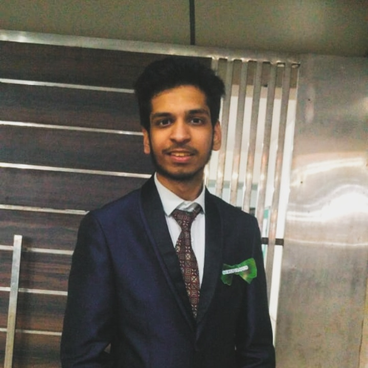

Swapnil Mishra

Summary
I am a hard working individual, who loves to code and befriend new people.
I always look to get inspired and learn from everyone around me.
Education
- Bachelors of Technology - Maharaja Agrasen Institute of Technology (2020- 2024)
Cerifications
-
Coding Ninjas - Learn C++ and DSA
December,2022-April,2023
- Implemented basic C++
- Learned about Data Structures
- Discovered various applications of OOPs.
-
Angela Yu Web Development Bootcamp
May,2023 - Cont.
- Learned about Web
- Applied HTML,CSS and JS in developing web pages
- Discovered whole full stack web develeopment
Skills
- C++
- DSA
- Web Development
- Leadership
Curricular activities
- Vice President, Funk In Motion (Western Dance Society, MAIT): 2022-23
Others
Contact Me
My hobbies